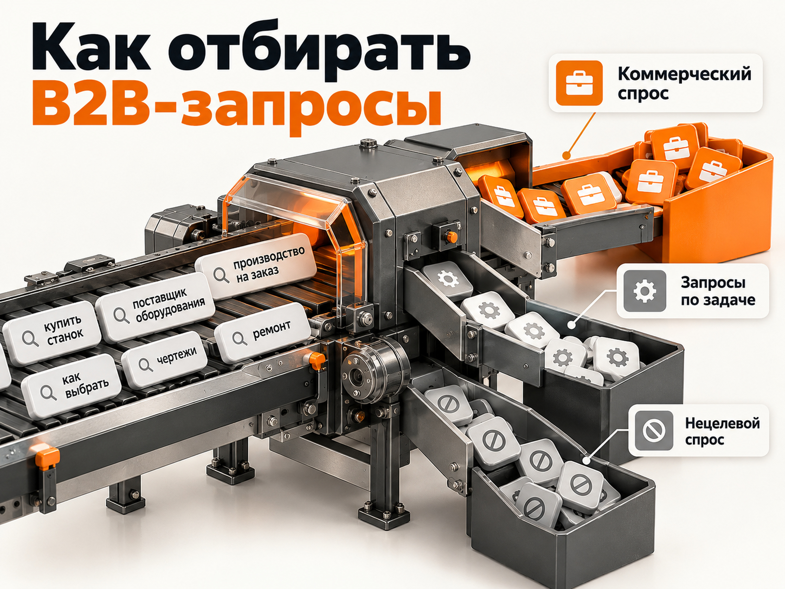
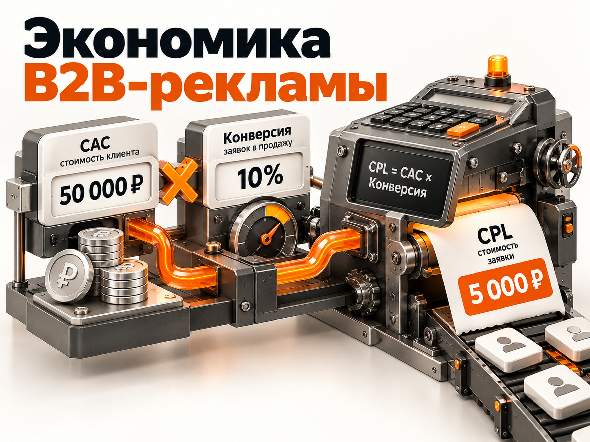

Блог о платном трафике
Яндекс Директ для B2B: как получать целевые заявки в сложных нишах
Яндекс Директ для B2B нужно настраивать под реальный спрос, особенности продукта и цикл сделки. Если заказчики уже ищут конкретную услугу, основной результат часто приносит Поиск. Если прямых запросов мало, стоит тестировать РСЯ и автоматические кампании. При этом эффективность нужно оценивать не только по цене заявки, но и по тому, сколько обращений превращается в потенциальных клиентов и реальные продажи.
Для запуска важно определить целевого покупателя, разделить направления бизнеса, подготовить посадочные страницы, выбрать рекламные кампании и настроить аналитику. Бюджет лучше рассчитывать от допустимой стоимости привлечения клиента и конверсии заявок в сделки.
В моих B2B-проектах результаты сильно различаются. В юридическом консалтинге около 99% лидов поступает с Поиска, а в рекламе фабрики детской одежды основной объём обращений дала РСЯ. Ниже разберу, почему так происходит, как выбирать рекламные инструменты и какие показатели использовать для оценки результата.
Чем реклама B2B отличается от массового B2C
Главное отличие B2B-рекламы - между первым обращением и покупкой часто проходит несколько этапов согласования. Поэтому реклама должна не только приводить заявки, но и находить клиентов, соответствующих требованиям бизнеса.
Например, потенциальный заказчик может:
- Изучить нескольких производителей или поставщиков.
- Запросить технические характеристики и условия.
- Согласовать предложение с руководителем.
- Получить коммерческое предложение.
- Обсудить договор, оплату и сроки.
- Вернуться к покупке через несколько недель или месяцев.
В процессе могут участвовать собственник, директор, снабженец, инженер, юрист и финансовый специалист. Причём один человек ищет решение, другой сравнивает поставщиков, а третий принимает окончательное решение.
Из-за этого одна и та же рекламная кампания может получать дешёвые заявки, но не приводить продажи. Без информации от отдела продаж сложно понять, какие обращения действительно представляют ценность.
Когда Яндекс Директ подходит для B2B
Яндекс Директ подходит B2B-компаниям, если потенциальные клиенты уже ищут их продукцию, подрядчиков или способы решить конкретную задачу. При отсутствии прямого спроса реклама тоже возможна, но её результат становится менее предсказуемым.
Характерные направления:
- Производство продукции под заказ.
- Продажа промышленного оборудования.
- Оптовые поставки.
- Юридические и технические услуги для организаций.
- Организация производства.
- Сложные услуги с высоким чеком.
- Подрядные работы для предприятий.
Перед запуском нужно проверить не только частотность очевидных запросов, но и смежный спрос.
Например, предприниматель может не искать услугу «организация швейного производства». Вместо этого он вводит запросы о пошиве партии одежды, поиске фабрики или запуске собственного бренда.
Если ограничиться только названием услуги, значительная часть потенциальной аудитории останется за пределами рекламной кампании.
Как запускать Яндекс Директ для B2B в 2026 году
Начинать B2B-рекламу нужно с анализа бизнеса, а не с создания объявлений. Правильная последовательность помогает не смешивать разные аудитории и заранее определить, какой результат считать успешным.
1. Определить целевого заказчика
Сначала нужно выяснить, какие организации подходят компании.
Важны отрасль, размер клиента, география, минимальный объём заказа, бюджет и ограничения по сотрудничеству.
Например, фабрике, работающей только с крупным оптом, обращения от розничных покупателей могут быть бесполезны даже при низкой цене лида.
2. Разделить направления бизнеса
Разные товары или услуги могут иметь разную аудиторию, маржинальность и цикл продажи.
Если компания одновременно продаёт оборудование, занимается монтажом и предлагает техническое обслуживание, эти направления нужно анализировать раздельно.
Это не означает, что для каждого продукта обязательно создавать отдельную кампанию. Разделение должно помогать управлять рекламой и оценивать результаты, не лишая алгоритмы необходимого объёма данных.
3. Изучить поисковый спрос
Нужно собрать прямые коммерческие запросы, профессиональные формулировки и запросы по задачам потенциальных покупателей.
На этом этапе становится понятнее, есть ли смысл начинать с Поиска или потребуется одновременно проверять другие рекламные инструменты.
4. Подготовить посадочные страницы
Объявление должно вести на страницу конкретного предложения.
Для одного направления это будет каталог оборудования, для другого - страница услуги с описанием этапов, сроков и формой получения коммерческого предложения.
5. Настроить рекламу и аналитику
После подготовки сайта можно запускать кампании, выбирать стратегию, ключевые фразы, категории автотаргетинга, аудитории и ограничения.
До начала показов должны работать основные цели Метрики. Если компания использует CRM, желательно сразу предусмотреть сохранение рекламного источника и дальнейших статусов обращений.
6. Оценивать качество заявок
После запуска нужно проверять реальные поисковые запросы, рекламные площадки, стоимость обращений и обратную связь отдела продаж.
Если трафик приводит неподходящих клиентов, проблема может находиться в семантике, аудитории, объявлении или самой посадочной странице.
Поэтому запуск B2B-рекламы я рассматриваю как начало проверки гипотез, а не как завершённую настройку.
Поиск или РСЯ для B2B
Поиск и РСЯ решают разные задачи. Поиск позволяет работать с пользователями, которые уже сформулировали потребность. РСЯ помогает расширять охват, работать с потенциальным спросом и повторно обращаться к аудитории, которая ранее взаимодействовала с сайтом.
Выбор зависит от поведения покупателей в конкретной нише.
| Ситуация | Что тестировать в первую очередь |
|---|---|
| Клиент ищет конкретный товар или услугу | Поиск |
| Есть профессиональные коммерческие запросы | Поиск |
| Прямого спроса очень мало | РСЯ и автоматические кампании |
| Нужно расширить охват за пределами поиска | РСЯ |
| Решение принимается долго | Поиск и ретаргетинг |
| Нужно вернуть заинтересованных посетителей сайта | РСЯ и сегменты Метрики |
Когда Поиск даёт основной результат
Хороший пример - юридический консалтинг.
В этом проекте спрос возникает в момент конкретной обязательной задачи: публикации на Федресурсе, регистрации в Роскомнадзоре, категорирования КИИ и других профильных услуг.
Около 99% лидов поступает с Поиска. Баннерная реклама практически не приносит заявок, поскольку потенциальному клиенту сложно предложить такую услугу заранее.
Похожая ситуация была в проекте по организации швейного производства.
Основной упор сделали на поисковую рекламу. Наиболее стабильный поисковый трафик давал обращения примерно по 1500 ₽. Клиенты уже понимали, что им нужен подрядчик для организации пошива.
Когда РСЯ оказывается сильнее
Обратный пример - выкуп акций с высоким чеком.
В этой нише прямого поискового спроса практически нет. Потенциальный клиент может быть заинтересован в услуге, но не искать её по точному названию.
Основной объём обращений обеспечивали РСЯ и Мастер кампаний. По отслеживаемым целям стоимость обращения составляла около 4000‑4200 ₽. С учётом дополнительных точек контакта расчётная стоимость была примерно 2500 ₽.
Ещё один пример - фабрика детской одежды. РСЯ обеспечила основной объём обращений примерно по $4, а Поиск по пошиву давал лиды около $13.
Эти показатели относятся к конкретным проектам и не являются средними значениями для B2B-рынка.
Главный вывод: нельзя заранее считать Поиск обязательным основным каналом для любого B2B-бизнеса. Канал выбирается по спросу и результатам тестирования.
Как собирать семантику для B2B
Семантику B2B-рекламы нужно собирать по намерению пользователя, а не только по названию продукта. Узкие профессиональные запросы могут иметь небольшую частотность, но приводить более подходящих покупателей.
Прямые коммерческие запросы
Это обращения пользователей, которые уже ищут товар или подрядчика.
Примеры:
- производство одежды оптом;
- заказать промышленное оборудование;
- юридический консалтинг для бизнеса;
- поставщик светодиодного оборудования;
- оптовый поставщик продуктов.
Такие запросы обычно ближе всего к покупке, однако их объём может быть ограничен.
Запросы по задаче
Клиент может искать решение проблемы, не зная точного названия услуги.
Например, запросы о поиске швейной фабрики, пошиве партии одежды или запуске бренда относятся к разным формулировкам потенциально близкой задачи.
Такая семантика расширяет охват, но требует внимательно проверять коммерческий интерес пользователя.
Отраслевые и профессиональные формулировки
Снабженец, инженер и собственник бизнеса могут по-разному искать один продукт.
Поэтому при сборе семантики полезно учитывать технические характеристики, профессиональные названия оборудования, способы применения и отраслевую терминологию.
Как отсеивать нецелевой спрос
Для B2B особенно важно отделять коммерческие запросы от розничного и информационного спроса.
Например, рядом с запросами о промышленном оборудовании могут встречаться:
- покупка оборудования для личного использования;
- инструкции по самостоятельному изготовлению;
- вакансии и обучение;
- ремонт вместо покупки;
- чертежи и справочные материалы;
- товары другого класса или назначения.
Не нужно автоматически исключать все информационные запросы. Часть из них может принадлежать потенциальным клиентам на раннем этапе выбора.
Я сначала определяю явно неподходящие направления, а после запуска уточняю исключения по реальной статистике поисковых запросов.

Посадочная страница должна отвечать на задачу сегмента
В B2B особенно плохо работает страница, на которой одновременно рекламируются разные продукты и услуги без понятного разделения.
В кейсе фабрики детской одежды были созданы два отдельных лендинга:
- Пошив детской одежды на заказ оптом.
- Продажа готовой продукции оптом.
Это разные предложения, аудитории и сценарии покупки. Разделение позволило точнее связывать объявления с потребностями заказчиков.
На B2B-странице обычно полезны:
- Описание товара или услуги.
- Указание целевой аудитории.
- Минимальные объёмы заказа и ограничения.
- География работы.
- Сроки производства, поставки или выполнения.
- Характеристики и технические возможности.
- Примеры выполненных проектов.
- Этапы сотрудничества.
- Условия получения расчёта или коммерческого предложения.
- Контакты для обсуждения заказа.
Чем сложнее продукт, тем больше информации требуется до первого обращения. Посадочная страница должна помогать не только оставить заявку, но и сравнить предложение с конкурентами.
Подробнее о требованиях к таким страницам я писал в статье «Лендинг для Яндекс Директа».
Объявления для B2B: конкретика вместо общих обещаний
B2B-объявление должно сразу объяснять, что именно предлагает компания и кому это подходит.
Обещания вроде «высокое качество», «лучшие условия» или «индивидуальный подход» сами по себе мало помогают квалифицировать аудиторию.
Полезнее указать реальные параметры предложения:
- Вид продукции или услуги.
- Минимальную партию.
- Географию поставки.
- Производственные возможности.
- Сроки, если они известны.
- Возможность получить расчёт или КП.
- Специализацию компании.
Например, производителю с минимальным оптовым заказом полезно обозначить это ограничение в рекламе и на сайте. Так часть розничной аудитории сможет самостоятельно понять, что предложение ей не подходит.
Но указывать нужно только фактические условия компании. Придуманные преимущества ради повышения CTR могут увеличить количество неподходящих заявок.
Какую стратегию выбрать для B2B-рекламы
Стратегию Яндекс Директа следует выбирать с учётом количества конверсий, цели кампании и доступного бюджета. При небольшом объёме обращений нельзя рассчитывать, что алгоритм сразу сможет эффективно оптимизироваться по редким продажам.
В Директе доступны стратегии, ориентированные на клики, конверсии и экономический результат. При этом для нового B2B-проекта важно учитывать:
- Есть ли статистика реальных заявок.
- Сколько целевых действий происходит за неделю.
- Насколько стабильна стоимость привлечения.
- Передаются ли квалифицированные лиды из CRM.
- Соответствует ли недельный бюджет выбранной цели.
Если сделка происходит раз в несколько месяцев, использовать только её как цель оптимизации может быть неэффективно из-за нехватки данных.
В таком случае полезно начать с более частого и достаточно качественного действия, например реального обращения или квалифицированной заявки. По мере накопления статистики можно переходить к более глубоким событиям.
Не следует автоматически выбирать оплату за конверсии только потому, что бизнесу нужны заявки. Сначала нужно проверить, позволяют ли спрос, доступные данные и экономика использовать такой подход.
Аналитика B2B: почему заявка ещё не означает результат
Главная метрика B2B-рекламы - не просто количество обращений, а их коммерческая ценность.
Директ может фиксировать заявки с сайта, но для оценки продаж необходимо понимать, что произошло после первого контакта.
Удобно разделять следующие этапы.
| Этап | Что оцениваем |
|---|---|
| Первичная заявка | Количество обращений и CPL |
| Квалифицированный лид | Соответствие клиента требованиям и стоимость подходящего обращения |
| Коммерческое предложение | Сколько клиентов дошло до предметного обсуждения |
| Переговоры | Сколько потенциальных клиентов продолжили взаимодействие |
| Продажа | Количество сделок и стоимость привлечения клиента |
Например, кампания с CPL 1000 ₽ не обязательно лучше кампании с CPL 3000 ₽.
Если первая приводит преимущественно неподходящих покупателей, а вторая регулярно получает обращения от компаний с нужным бюджетом и объёмом закупки, более дорогие первичные лиды могут оказаться экономически выгоднее.
Поэтому при сравнении кампаний я бы смотрел минимум на два показателя: стоимость первичного лида и стоимость квалифицированного обращения.
Как связать Яндекс Директ с CRM
Яндекс позволяет передавать офлайн-конверсии из CRM в Метрику и Директ. Для сопоставления обращений с визитами могут использоваться ClientID, телефон или email.
Данные можно передавать через поддерживаемые интеграции, API или Центр конверсий.
Это позволяет учитывать события, которые происходят после посещения сайта: квалификацию обращения, изменение статуса заказа или продажу. Для длинного цикла сделки особенно важно сохранять идентификаторы и своевременно обновлять данные.
Если данных достаточно, сведения из CRM можно использовать не только для отчётности, но и для оптимизации рекламных кампаний.
При этом не стоит передавать случайные промежуточные статусы как равноценные продажи. Алгоритм должен получать сигналы, действительно связанные с бизнес-результатом.
Отдельно я разбирал расчёт конверсии в Яндекс Директе.
Как рассчитать бюджет и допустимую стоимость B2B-лида
Бюджет B2B-рекламы правильнее рассчитывать от экономики продажи. Универсальной стоимости заявки для всех B2B-компаний не существует: слишком сильно отличаются продукты, маржинальность, спрос и цикл сделки.
Сначала нужно определить, сколько бизнес готов потратить на получение одного нового клиента.
Затем рассчитать допустимую стоимость первичной заявки с учётом конверсии в продажу.
Формула:
Допустимый CPL = допустимый CAC × конверсия из заявки в продажу.
Где:
- CPL - стоимость первичной заявки.
- CAC - стоимость привлечения клиента.
- Конверсия из заявки в продажу - доля обращений, которые заканчиваются сделкой.
Пример расчёта для B2B-компании
Предположим, компания продаёт дорогостоящую услугу предприятиям.
Все показатели ниже условные и используются только для объяснения расчёта, а не как прогноз рыночных результатов.
Исходные данные:
| Показатель | Значение |
|---|---|
| Маржинальный доход с одной сделки до затрат на привлечение | 250 000 ₽ |
| Допустимая доля расходов на привлечение | 20% |
| Допустимый CAC | 50 000 ₽ |
| Доля квалифицированных лидов | 50% |
| Конверсия квалифицированных лидов в продажу | 20% |
| Общая конверсия заявок в продажу | 10% |
Допустимый CAC составляет 50 000 ₽, поскольку компания готова направить на привлечение клиента 20% маржинального дохода от сделки.
При конверсии 10% допустимый CPL составляет:
50 000 × 10% = 5000 ₽.
Если компания хочет получить две дополнительные сделки, при таких допущениях ей потребуется 20 первичных заявок.
Расчётный бюджет:
20 × 5000 = 100 000 ₽.
При этом из 20 обращений ожидаются 10 квалифицированных лидов и две продажи. Стоимость квалифицированного лида составит 10 000 ₽, а стоимость привлечённой сделки - 50 000 ₽.

Это математическая модель, а не обещание результата. Фактическая конверсия может отличаться, а доступного спроса может оказаться недостаточно для получения необходимого числа обращений.
Как определить бюджет на первый тест
Если исторических данных нет, лучше сначала оценить спрос, предполагаемую стоимость трафика и возможную конверсию сайта. Затем определить бюджет, позволяющий собрать достаточно информации для проверки гипотезы.
Для первого теста важно проверить:
- Приходят ли подходящие посетители.
- Какая доля посетителей оставляет заявки.
- Сколько обращений проходит квалификацию.
- Какие кампании дают наиболее перспективных клиентов.
- Насколько полученная стоимость обращения соответствует экономике бизнеса.
Не стоит распределять небольшой бюджет между множеством независимых кампаний. Иначе каждой из них может не хватить данных для оценки результата.
Также важно разделять расходы на рекламу и оплату работы специалиста. Это разные статьи бюджета.
Что показывают реальные B2B-кейсы
В B2B нет универсального канала, который всегда даёт самые дешёвые и качественные обращения. Пять проектов из моей практики показывают, насколько результат зависит от продукта и характера спроса.
| Проект | Основной результат | Показатели |
|---|---|---|
| Выкуп акций | РСЯ и Мастер кампаний | Около 2500 ₽ за обращение с учётом дополнительных точек контакта |
| Организация швейного производства | Поиск | 1500‑3000 ₽ за заявку |
| Фабрика детской одежды | РСЯ | Около $4 за лид |
| Юридический консалтинг | Поиск | Около 99% лидов с Поиска |
| Оптовый суперфуд | Оптимизация действующей рекламы | Снижение CPL с 1300 до 600 ₽ |
Это результаты отдельных проектов. Периоды, бюджеты, условия расчёта и качество обращений различаются, поэтому показатели нельзя напрямую сравнивать или использовать как среднюю цену лида для нового бизнеса.
Выкуп акций: высокий чек при слабом прямом спросе
Кейс выкупа акций показывает ситуацию, в которой реклама только на Поиске не обеспечила бы достаточного охвата.
Основной объём обращений давали РСЯ и Мастер кампаний.
При рекламном бюджете около 300 000 ₽ в неделю стоимость обращения по отслеживаемым целям находилась на уровне 4000‑4200 ₽. С учётом дополнительных точек контакта расчётная стоимость составляла около 2500 ₽.
Этот пример показывает, что для сложной услуги с ограниченным прямым спросом сетевые инструменты могут быть важнее поисковых объявлений.
Организация швейного производства: горячий поисковый спрос
В проекте по организации швейного производства основной результат приходил с Поиска.
Стоимость заявки находилась в диапазоне 1500‑3000 ₽. Наиболее стабильный поисковый трафик приносил обращения примерно по 1500 ₽.
При этом цикл сделки оставался длинным, поэтому оценка эффективности по фактическим продажам требовала большего времени, чем анализ первых лидов.
Фабрика детской одежды: разные продукты и разные CPL
В кейсе фабрики детской одежды были разделены два направления: пошив продукции на заказ и продажа готовой одежды оптом.
Результаты отличались:
- РСЯ обеспечивала обращения примерно по $4.
- Поиск по пошиву давал заявки около $13.
- Продажа готовой продукции со склада обходилась примерно в $40 за лид.
Разница объясняет, почему нельзя оценивать всю рекламу компании по единому среднему CPL. Даже внутри одного бизнеса разные продукты могут иметь совершенно разную экономику.
Юридический консалтинг: спрос возникает в конкретный момент
Кейс юридического консалтинга показывает противоположную модель.
Около 99% лидов поступает с Поиска, поскольку пользователям нужны конкретные услуги для решения уже возникшей задачи.
При рекламном бюджете более 18 млн ₽ в год стоимость лида заметно различалась между направлениями. Простые лид-магниты могли приносить обращения по 150‑300 ₽, а сложные услуги обходились значительно дороже.
Поэтому сравнивать CPL разных юридических услуг без учёта их дальнейшей конверсии некорректно.
Оптовый суперфуд: рост без увеличения бюджета
В кейсе оптового суперфуда задача заключалась не в расширении бюджета, а в повышении эффективности действующей рекламы.
При рекламных расходах около 102 000 ₽ стоимость лида снизилась с 1300 до 600 ₽, а количество обращений выросло примерно вдвое.
Это пример того, как перераспределение бюджета и работа с рекламными кампаниями могут улучшить результат без увеличения расходов.
Общий вывод из пяти кейсов: эффективность B2B-рекламы определяется соответствием канала реальному спросу, качеством посадочной страницы и дальнейшей обработкой обращений.
Типичные ошибки в Яндекс Директе для B2B
Считать все заявки одинаковыми
Одна из основных ошибок - ориентироваться только на средний CPL.
Допустим, кампания привлекает обращения от студентов, розничных покупателей и компаний, которые не соответствуют минимальному объёму заказа. Формально заявок много, но коммерческой ценности у большинства из них нет.
Поэтому полезно передавать из отдела продаж причины отклонения обращений и использовать эту информацию при оптимизации.
Делать одну страницу на все направления
Если компания одновременно работает с несколькими разными сегментами, общая страница часто не позволяет точно объяснить предложение каждому покупателю.
Разделять посадочные страницы следует по реальным различиям в спросе и продукте, а не ради искусственного увеличения количества страниц.
Слишком сильно дробить кампании
Низкочастотная B2B-семантика не требует создания десятков маленьких кампаний.
Когда каждая кампания получает мало трафика и конверсий, алгоритмам может не хватать данных для оптимизации.
Оценивать рекламу слишком рано
Качество поисковых запросов и первичных обращений можно проверить сравнительно быстро. Но если цикл сделки составляет несколько месяцев, первая неделя не покажет фактическую окупаемость рекламы.
Смотреть только на CPL
Дешёвая заявка не обязательно приводит к дешёвой продаже.
Нужно учитывать стоимость квалифицированных лидов, долю переговоров, количество сделок и итоговую прибыль.
Запускать рекламу без нормальной аналитики
До запуска должны быть настроены Метрика и основные цели. Желательно сохранять информацию об источнике в CRM и фиксировать причины отклонения заявок.
Если реклама уже работает, но результаты не устраивают, полезно начать с аудита Яндекс Директа.
Частые вопросы
Можно ли использовать Яндекс Директ при очень низкой частотности B2B-запросов?
Да, но объём прямого поискового спроса может ограничивать количество заявок. В таком случае имеет смысл проверять более широкие запросы по задаче, РСЯ и автоматические кампании. Рентабельность зависит от стоимости привлечения и ценности сделки.
Сколько времени нужно, чтобы оценить B2B-рекламу?
Первые выводы по качеству трафика и заявок можно делать после накопления достаточной статистики. Окупаемость следует оценивать с учётом цикла продажи. Если сделки закрываются через несколько месяцев, анализировать нужно также квалифицированные лиды и промежуточные этапы воронки.
Можно ли запускать B2B-рекламу без CRM?
Можно, если корректно настроены Метрика и учёт обращений. Однако без CRM сложнее связывать рекламу с квалифицированными лидами и сделками, особенно при длинном цикле покупки. Для небольшого проекта на первом этапе достаточно хотя бы системного учёта заявок и результатов их обработки.
Итог
Яндекс Директ для B2B эффективнее всего работает тогда, когда реклама учитывает специфику спроса и реальную экономику бизнеса.
Если клиент ищет готовое решение, логично начинать с Поиска. Если прямого спроса мало, стоит тестировать РСЯ и автоматические кампании. Разные направления бизнеса нужно оценивать отдельно, а эффективность определять по качеству обращений и продажам, а не только по CPL.
В моей практике есть проекты с совершенно разной рекламной механикой: производство, оптовые поставки, юридический консалтинг и сложные услуги с высоким чеком. Их результаты представлены в портфолио кейсов.
Я занимаюсь настройкой и ведением Яндекс Директа, включая B2B-проекты. Стоимость услуг - от 30 000 ₽ в месяц, рекламный бюджет оплачивается отдельно.
Перед запуском или переработкой рекламы я сначала оцениваю спрос, сайт, аналитику и экономику проекта. Это позволяет определить, какие кампании действительно стоит запускать и как оценивать их эффективность.